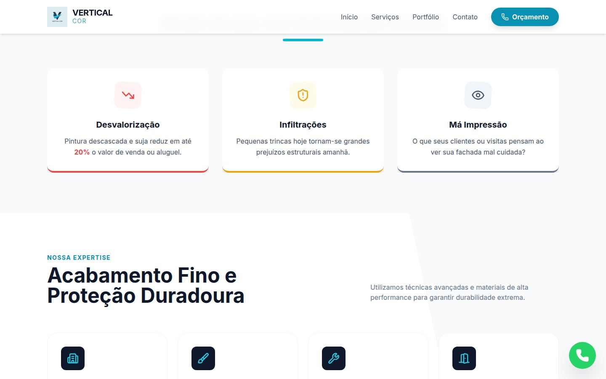
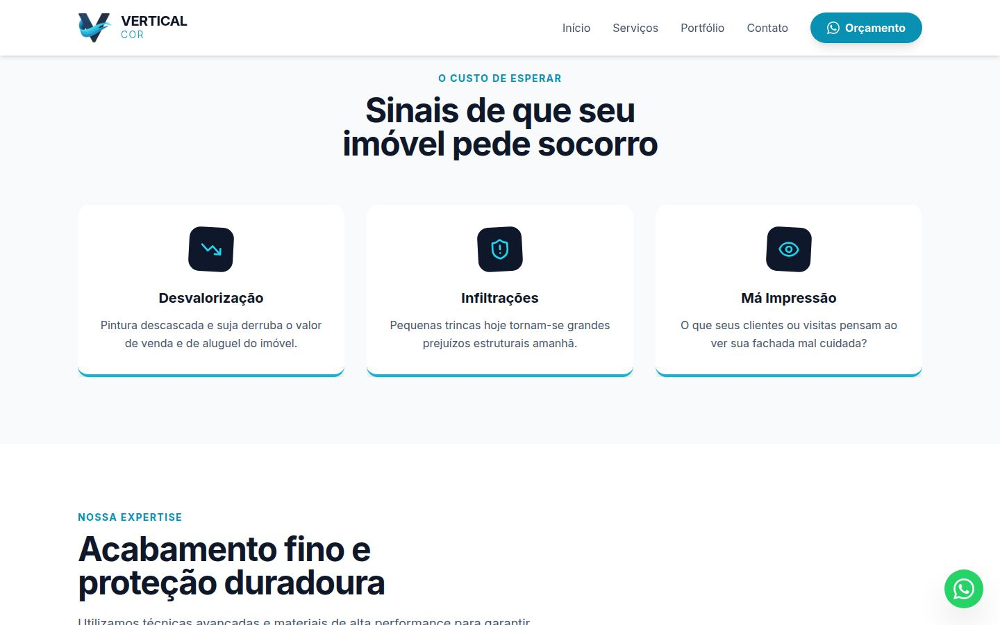
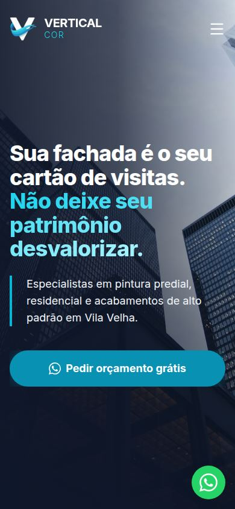

Refino do site Vertical Cor
2026-10-09 · ramo refino · prévia na Vercel (produção intacta)
Decisão: aprovar a prévia para ir ao ar e decidir 3 pontos que dependem do Pedro (fotos, vídeo, foto do topo).
Recomendação: publicar o refino já; o vídeo com "Vertical Core" e o canal pessoal é o ponto mais urgente fora do código.
Confiança: alta no que mudou (testado no computador e no celular); média em quanto a nota sobe sem fotos reais.
Próximo passo: com o seu sim, publico em produção e junto o ramo refino ao main.
O que precisa de você (fora do código)
| Ponto | Quem apontou | O que fazer |
|---|---|---|
| Vídeo: legenda "A Vertical Core", título com erro de digitação, canal "Fabio Pantoja – ChatGPT e IA" e selo Veo à mostra | 3 de 3 | Corrigir o texto e subir num canal da Vertical Cor; me passar o novo link (troca de 1 linha) |
| Antes/depois: legenda diz "real", os 3 revisores acharam que parece imagem gerada | 3 de 3 | Confirmar com o Pedro. Se não for obra dele, trocar a palavra "real" (o registro de maio diz que foi ele quem mandou) |
| Foto do topo: arranha-céu de vidro, não mostra pintura | 3 de 3 | Mantida (decisão anterior). Trocar quando houver foto de fachada pintada ou equipe no balancim |
| Prova: só uma obra no portfólio, nenhum depoimento | 3 de 3 | Pedir ao Pedro de 3 a 6 obras e depoimentos (já está em PENDENCIAS-PEDRO.md) |
O que foi aplicado (2 de 3 revisores ou mais)
| # | Mudança | Votos | Commit |
|---|---|---|---|
| 1 | Logo: só o "V" com fundo transparente (versões marinho e branca, ~35 KB contra 889 KB); nome visível no celular; favicon, ícone de celular e imagem de compartilhamento 1200×630 | 3 | cb6bb5a |
| 2 | Topo: texto alinhado à grade, degradê de contraste, botão "Pedir orçamento grátis" em uma linha, seta só no computador | 3 | 72e87ba |
| 3 | Botão flutuante com o ícone do WhatsApp e sem cobrir o rodapé | 3 | b954ee9 |
| 4 | 3 | c4dc755 → 9b35e80 | |
| 5 | Padrão único de título de seção; cards da "dor" nas cores da marca; serviços sem a faixa diagonal, cards iguais, link de orçamento; um ícone por diferencial | 2–3 | b9b3f96 157566c |
| 6 | Antes/depois: não trava a rolagem no celular, aceita toque e teclado, não corta a foto; textura de fundo sem site externo | 2 | 48323bc |
| 7 | Formulário: exemplo de telefone neutro, campo "Tipo de imóvel", botão "Pedir orçamento pelo WhatsApp", mais contraste; link "Ligar agora" | 3 | df4b486 |
| 8 | Menu não esconde o título ao pular de seção; 1ª pergunta aberta; respeita "reduzir movimento" | 2 | d9a1f6e |
| 9 | Títulos em peso 700 com quebra equilibrada (no 800 as letras encostavam) | conferência do Opus | 7997bb9 |
Ficou de fora (só 1 revisor): cartão branco do endereço no rodapé, mapa embutido, mudar o tom navy-800, mais perguntas no FAQ, frase de confiança sob o botão do topo.
Antes × depois



Todas as telas: pastas antes/ e depois/.
Cores (códigos para o manual)
| Nome | Código | Onde aparece |
|---|---|---|
| Marinho (principal) | #0F172A | Títulos, fundos escuros, topo rolado |
| Azul profundo | #1E3A8A | Moldura do antes/depois |
| Ciano 600 (ação) | #0891B2 | Botões, chamadas, foco |
| Ciano 500 | #06B6D4 | Barras, bordas de destaque, puxador |
| Ciano 400 | #22D3EE | Destaques sobre fundo escuro |
| Ciano 200 | #A5F3FC | Fim do degradê do título principal |
| Ciano 700 | #0E7490 | Link de texto sobre branco |
| Fundo claro | #F8FAFC | Seções alternadas |
| Texto | #475569 | Parágrafos sobre claro |
| Texto sobre escuro | #CBD5E1 / #94A3B8 | Subtítulos / textos pequenos no marinho |
| Linhas | #E2E8F0 | Bordas de cards e FAQ |
#25D366 (hover #20BD5A) | Só o botão flutuante |
Cores medidas na logo (amostra do arquivo; arredondar no manual): V marinho #25456B → #232F45 (degradê) · fita ciano clara #41CFE5 · média #2CB6DB · escura #1F8AC4 · fundo da logo escura #22364F · fundo da logo clara #DEECEF.
Letras
| Uso | Fonte | Peso |
|---|---|---|
| Título principal (topo) | Inter | 800 (ExtraBold), entrelinha 1,1 |
| Títulos de seção | Inter | 700 (Bold), 30 px celular / 48 px computador |
| Chamada acima do título | Inter | 700, maiúsculas, 14 px, espaçamento largo |
| Botões e títulos de card | Inter | 700 |
| Texto corrido | Inter | 400, 16–18 px |
| "COR" ao lado do símbolo | Inter | 300 (Light), espaçamento largo |
A palavra "VERTICAL COR" desenhada dentro da logo original usa outra letra (geométrica, sem arquivo de fonte). Para o manual: ou adotar Inter no nome, ou identificar/escolher essa fonte.
Checklist de teste (na prévia)
- Celular: role a página com o dedo por cima da foto do antes/depois → a página rola normalmente.
- Celular: arraste para o lado em cima da foto → a barra acompanha o dedo.
- Preencha o formulário com tipo "Casa" e envie → o WhatsApp abre com nome, telefone e tipo de imóvel.
- Toque em "Ligar agora" → o celular oferece ligar para (27) 99935-1626.
- Menu → "Contato" → o título "Pronto para transformar seu imóvel?" aparece inteiro, sem ficar sob o topo.
- Veja o fim da página no celular → o botão verde não cobre "Termos de Uso".
Não precisa testar: páginas de Política e Termos (só mudou o ícone da aba) e o computador em geral (conferido por capturas).
Revisores: Lia, Caio e Bruno (Sonnet 5.5, contexto limpo; prompt em prompt-revisores.md). Nota de cada um para o site antigo: 5,5.
Feito por: Opus 5.5